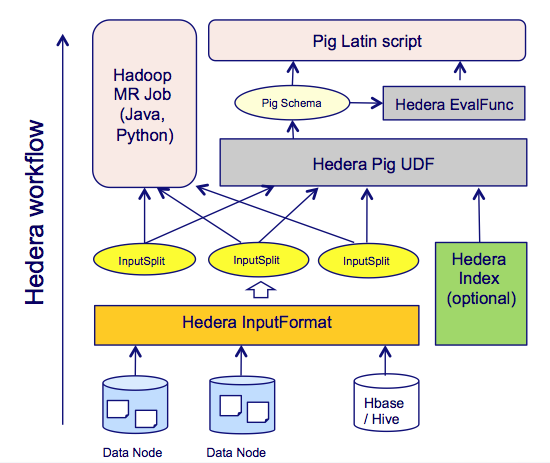

Hedera
A Hadoop toolkit for processing large versioned document collections
Architecture

While there are several frameworks built to support processing big textual data (both in MapReduce and non-MapReduce fashion), little has been focused on efficient processing of versioned document collections such as Web archives, revisions of collaborated documents (news articles or encyclopedia pages such as Wikipedia). As compared to traditional corpora, versioned documents have some following special characteristics: